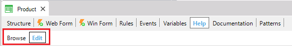
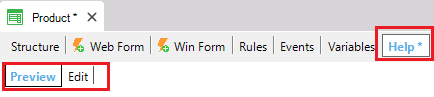

PurposeEdits the Help feature available for the current object. You can enter a detailed description for every object, which can then be accessed online as help by the end user at execution time. Two selectors are shown at the top of the window: Browse and Edit.  The first one has an intuitive function, changing the label from "Browse" to "Preview" as soon as a change is made in the Help content (for example, when text is entered). After the first change has been made, the "Browse" label will no longer be visible for the selected object. The Edit selector allows you to edit the content.  Also note that the Help selector, in the upper area, is shown with an asterisk (*), indicating that changes have been made in the Help content. See AlsoMore Details
|
| Backlinks |
| Category:Document object |